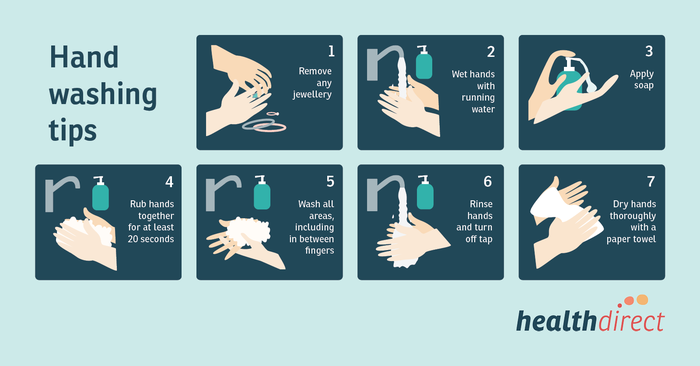

Clean Hands Protect Against Covid
Washing hands prevents illnesses and spread of infections to others.
Steps to Wash your Hands
Advantages of Washing your hands Properly
| Hand-washing with soap removes germs from hands. This helps prevent infections because: | |
|---|---|
| People frequently touch their eyes, nose, and mouth without even realizing it. Germs can get into the body through the eyes, nose and mouth and make us sick. | Germs from unwashed hands can get into foods and drinks while people prepare or consume them. Germs can multiply in some types of foods or drinks, under certain conditions, and make people sick. |
| Germs from unwashed hands can be transferred to other objects, like handrails, table tops, or toys, and then transferred to another person’s hands. | Removing germs through hand-washing therefore helps prevent diarrhea and respiratory infections and may even help prevent skin and eye infections. |